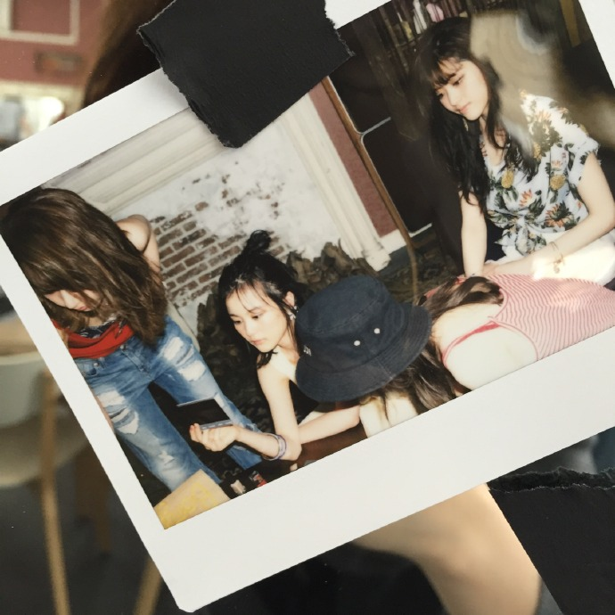

| 2016/08 05 Fri | なつだね、梅雨明けてた |
写真集発売！わーヾ(｡･ω･｡)
グアム前は筋トレしたよー水着着るため...！
最近してない筋トレ...筋トレ難しいよね、力のかけ方とか力の入れ方とか間違えると逆に身体の負担になるから、気をつけなきゃ！
と、ここで水着オフショット載せようと思ったけどたった今水着写メはブログのせちゃだめ指令が来た！笑
ざんねん、たくさん写メとってあるのよヾ(｡･ω･｡)
いつか解禁きたら載せるね！笑
天気良かった～グアム...
日光が好きなわたしには3月のグアムは最高の環境でした
今月号のキャンキャンみてくれたかな？わたし結構でていた！
キャンキャンメイク中笑
朝は動いてはいてもだいたい意識がないです
これは乃木坂企画をしてもらったときのお気に入りのポラ！

みんな素なかんじ

アイメイク薄めというかラインが目尻だけなんだけどわかる？しっかりしているようで薄め顔
わたしこの服好き
はだしでさまーはつばいされた、この車のシーン撮影中車内暑すぎて携帯壊れるんじゃないかと恐れつつも撮った写メ

今日中本食べた久しぶりに！わたしは行くと毎回冷やし五目蒙古タンメンを食べるよ、おいしかった！昨日の夜から食べたかったんや
では！
コメント(1515)
2016/08/05 00:24